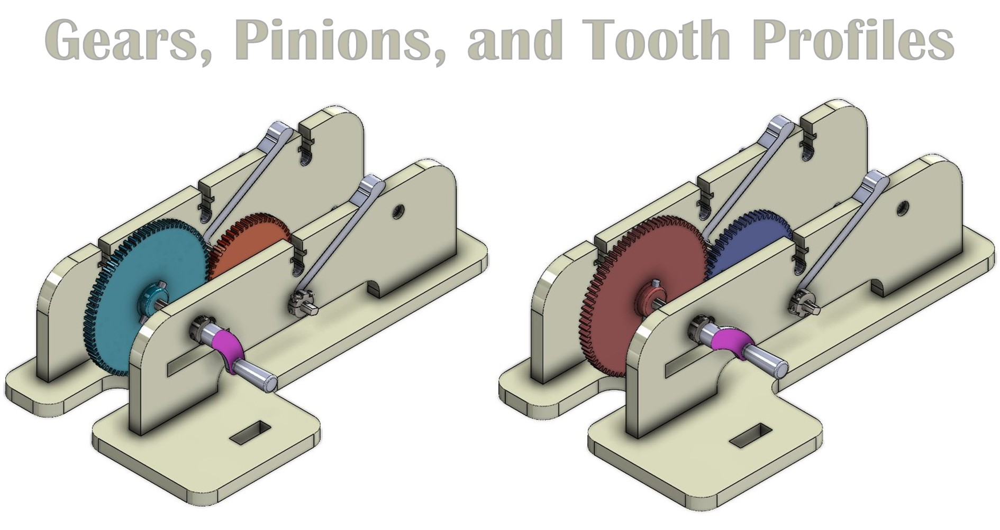

Gears & Pinions
Gears, Pinions, and Tooth Profiles: A Technical Overview
Gears and Pinions
Gears are toothed mechanical elements used to transmit power and motion between rotating shafts. When two gears of different sizes are in mesh, the smaller gear is termed the "pinion," and the larger is the "gear" or "wheel."
Key Functions:
- Velocity Ratio Modification: Gears alter the angular velocity and torque between the input and output shafts. The gear ratio (ratio of teeth on the gear to teeth on the pinion) determines the change in speed and torque.
- Direction of Rotation Change: External gears in mesh rotate in opposite directions. Internal gears allow for rotation in the same direction.
- Power Transmission: Efficiently transmit mechanical power, often with high precision.
Gear Tooth Profiles
The specific shape of the gear teeth is critical for smooth, efficient, and conjugate (constant velocity ratio) motion. The two primary classical tooth profiles are involute and cycloidal.
1. Involute Gear Teeth
Definition: The involute profile is the curve traced by a point on a straight line as the line rolls without slipping on the circumference of a base circle. Most modern gears utilize this profile.
Advantages:
- Constant Pressure Angle
- Center Distance Insensitivity
- Ease of Manufacturing
- Interchangeability
Disadvantages:
- Interference (with small number of teeth)
- Higher Contact Stresses (Potentially)
Common Applications: Widely used in automotive transmissions, industrial machinery, robotics, and general power transmission systems.
2. Cycloidal Gear Teeth
Definition: A cycloidal tooth profile is formed by a combination of an epicycloid (for the face of the tooth) and a hypocycloid (for the flank of the tooth). An epicycloid is traced by a point on the circumference of a circle rolling without slipping on the outside of a pitch circle. A hypocycloid is traced by a point on the circumference of a circle rolling without slipping on the inside of a pitch circle.
Advantages:
- No Interference
- Lower Wear (Potentially)
- Good for Small Pinions
- Uniform Radial Flank Wear
Disadvantages:
- Variable Pressure Angle
- Center Distance Sensitivity
- Manufacturing Complexity
- Non-interchangeability
Common Applications: Historically used in clocks, watches, and some instruments. Still found in certain specialized applications like Roots blowers, some types of pumps, and where pinions with a very small number of teeth are essential. In most power transmission applications, they have been largely superseded by involute gears.
Gears in the Kit
Our kit includes two sets of spur gears with Involute teeth and two sets with Cycloidal teeth. This allows for direct comparison and experimentation with both profiles. Students can observe differences in meshing, sensitivity to center distance, and potential for interference.
